Cool-Girl Gingham
Peek into this style
Gingham prints aren't anything new, but for Spring 2015, designers are honing in on a new way of presenting them. Presented in a range of colors that best any picnic tablecloth, they're likely to find fans beyond the more traditional wearer. Anything but precious, this print — whether blown up in size or sexed up in sheers — is primed for a street-style-worthy comeback.
| 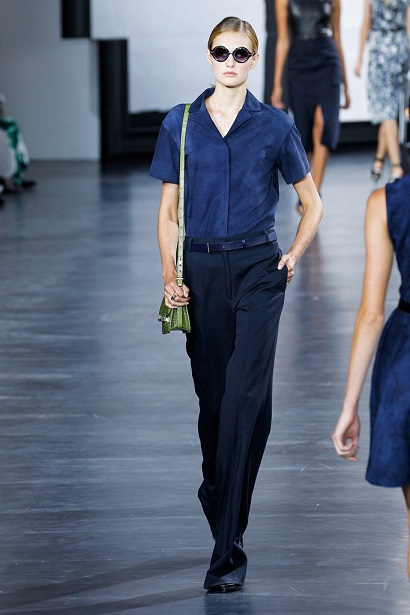 | 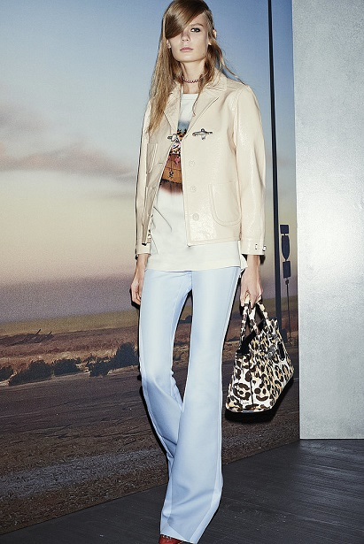 |
The Subtle '70s
Peek into this style
Every season, a specific decade takes over the runways, and after a close competition between the mod '60s and the 1970s, the latter has won out. But don't expect to be rocking full-fledged bell bottoms next year. This time, it's all about subtle touches in retro lapel shapes, juxtaposing color combinations, an abundance of denim, and pant silhouettes that are sometimes flared, sometimes full and wide.
| 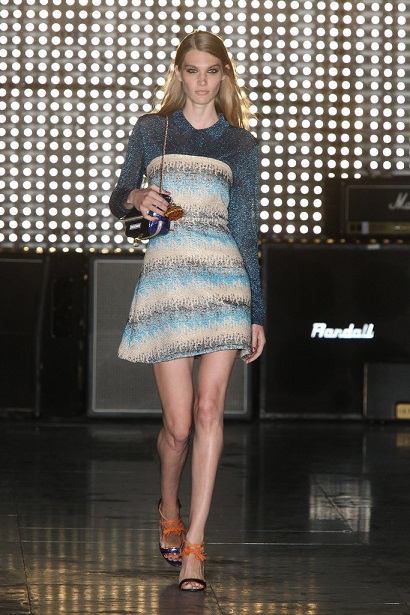 | 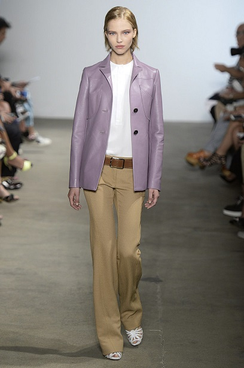 |
Sporty Minimalism
Peek into this style
We've seen full-on sportswear from the likes of Alexander Wang for years, but this go-around, we've noticed a pared-down approach to athletic influences. Lace-up styling is one of the most noteworthy choices this season, but from racing stripes and wrist bands to zipper pulls and drawstrings, just a detail here and there keeps the look fresh.
| 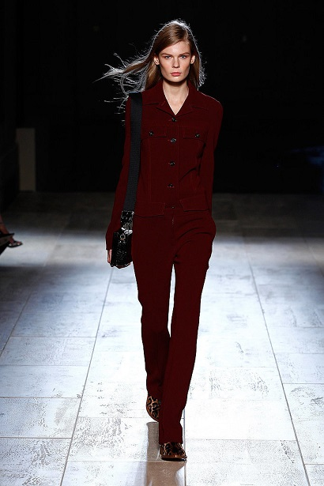 | 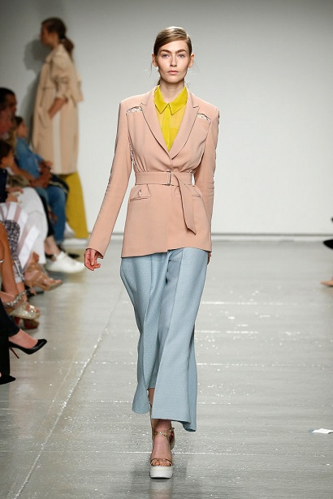 |
Colored Suede
Peek into this style
First there was multicolored patchwork fur, and now that same desire for pops of color can be found on suede. Typically not a Spring staple, this material gets a cooled-down effect thanks to pastel purples and bold blues, and it even has crossover effects in reds and mustard yellows.
| 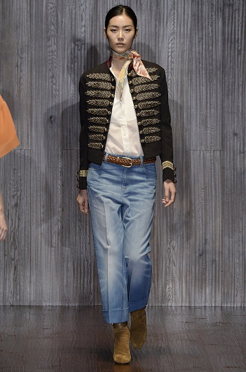 | 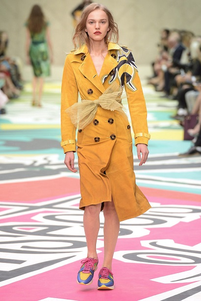 |
Apron Skirting
Peek into this style
This season, the runways took hold of a styling technique that was first seen on street style pros on and off for years. Designers from Peter Som to Donna Karan are officially giving new purpose to the skirt and having it function as an apron of sorts. From minis to pencils, when layered on top of oversize poplin shirts, accordion dresses, and pants, it creates a whole new look that will surely reinvigorate Spring wardrobes.
| 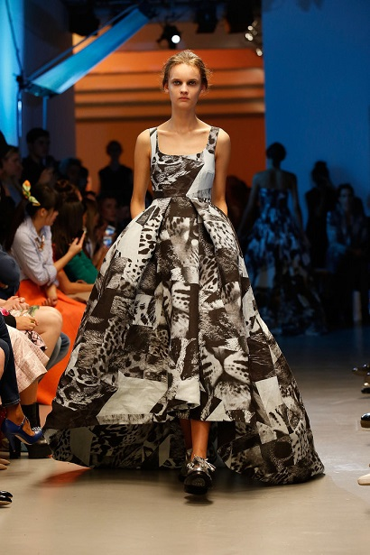 | 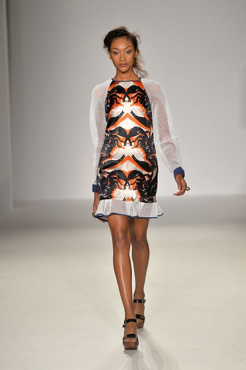 |
Statement Stripes
Peek into this style
Found on nearly every single Spring runway, stripes are making a major statement, but that doesn't necessarily mean the bigger the better. Instead, we're seeing designers play with positioning and placement, as with the striped treatment on textiles at Tibi.
| 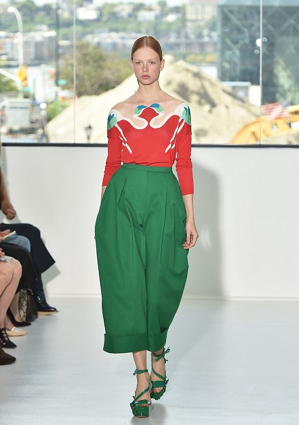 | 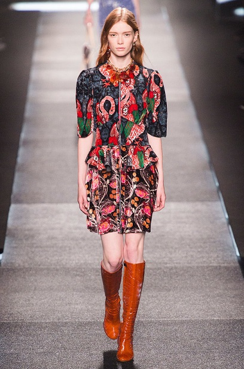 |
Modern Safari
Peek into this style
If clothes can be transportive, prepare to take a wild adventure come Spring. Major designers seemed to have a safari in mind as they created chic khaki trench dresses, poncho coats, fern prints, and camo-inspired pieces that were anything but invisible. Not at all about roughing it, these safari-inspired looks have an upscale aesthetic.
| 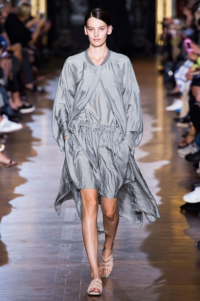 | 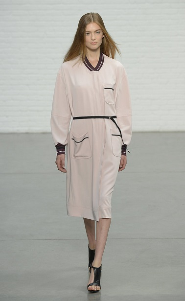 |